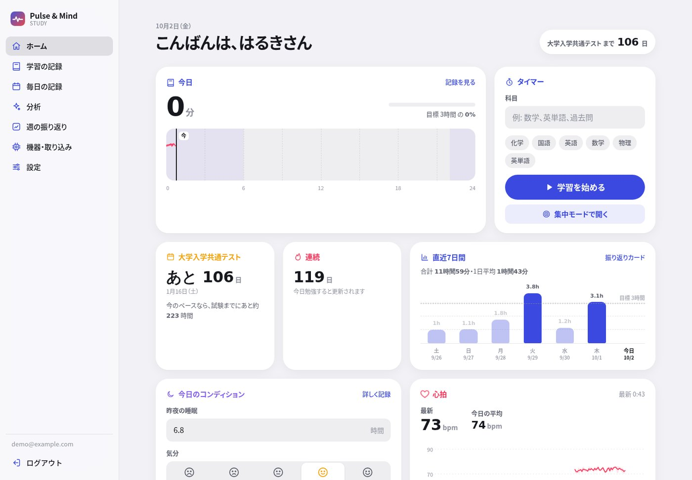
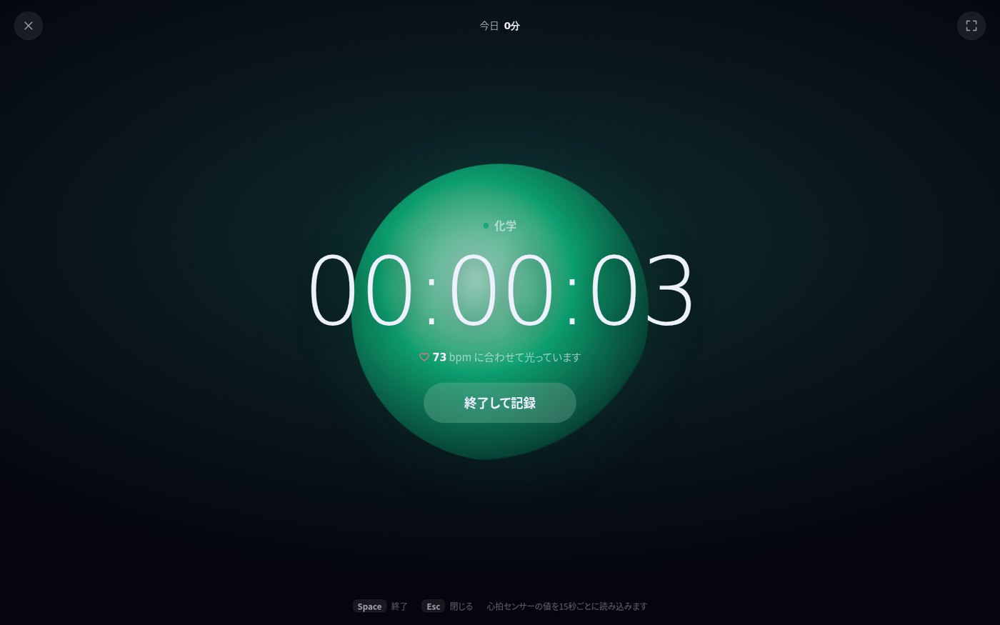
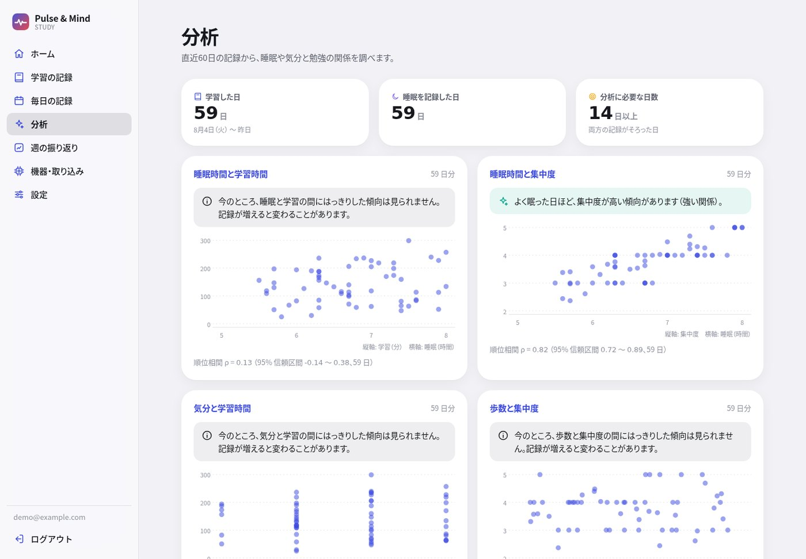
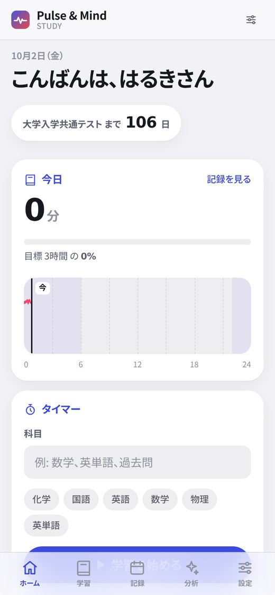

Pulse & Mind Study
勉強と体調を、ひとつのグラフで。受験生・大学生のための学習記録Webアプリです。学習時間に睡眠・気分・心拍をいっしょに記録し、「よく眠れた日は集中できているか」を自分のデータで確かめられます。



画面の記録はすべて乱数で作った見本データです。
概要
勉強の記録アプリは多くありますが、睡眠や心拍といった体調のデータと同じ画面で見られるものは多くありません。Pulse & Mind Studyは、学習時間に睡眠・気分・歩数・心拍を重ね、自分のリズムを確かめるためのWebアプリです。
心拍はArduinoで自作した脈拍センサーか、iPhone / Apple Watchの「ヘルスケア」の書き出しから取り込めます。Azure上で公開しており、だれでも登録して使えます。
| プラットフォーム | Web(Blazor Web App / .NET 10)。スマートフォンではホーム画面に追加して使える |
| 公開先 | Azure App Service + Azure SQL Database |
| 開発形態 | 個人開発 |
| 主な技術 | C#, Blazor, ASP.NET Core Identity(2段階認証・パスキー), Entity Framework Core, Azure, Bicep, GitHub Actions, xUnit v3, Arduino |
| ライセンス | MIT License |
構成図
データの流れに沿って、部品が順に光ります。
回路図
3D の部品を読み込んでいます
- 電源
- GND
- アナログ
- シリアル・USB
スケッチ（hardware/pulse-sensor）の配線です。拍動を見つけるたびに内蔵の LED を光らせ、USB シリアル（115200 bps）に「BPM:72」の形で出力します。PC の IoTBridge がこれを読んでサーバーへ送ります。
できること
- 1日のリズム: 0〜24時の帯に、勉強した時間(科目の色)と心拍の線を重ねて表示
- 集中モード: 全画面の静かな画面で、中央の光が心拍に合わせて脈打つ(センサーが無いときは1分に6回の呼吸のペース)
- 学習タイマー: 科目を選んで開始・終了。集中度(1〜5)とメモを残せ、止め忘れは12時間で区切る
- 試験カウントダウン: 目指す試験までの残り日数と「今のペースなら試験までにあと何時間」
- 1年分のカレンダーと週の振り返りカード: 振り返りカードは端末の中で画像にして保存・共有
- データの持ち出し・削除: 全データをCSVで書き出し、アカウント削除で全記録を削除
分析は「言いすぎない」
元の試作では、5行のダミーデータで学習させた機械学習モデルが「おすすめの学習時間」を出していました。もっともらしい数字は出ますが、根拠がありません。作り直しでは、分析の出し方そのものを見直しました。
- 14日分そろうまでは結論を出さず、「あと何日で分析できるか」を表示する
- 値そのものではなく順位で比べる(スピアマンのρ)。5段階の気分や、極端に長く勉強した日があってもぶれにくい
- 95%信頼区間が0をまたぐときは「はっきりした傾向は見られない」と表示する
- 相関と因果を区別する説明を、結果のすぐ横に置く
時刻と日付を正しく扱う
時刻はすべてUTCで保存し、「何日に何分勉強したか」は利用者のタイムゾーンで区切ります。たとえば日本時間23:30〜0:45の勉強は、2日に分けて30分と45分として数えます。夏時間のある地域もテストで確かめました。
心拍は1秒に何度も届くため、1分ごとの平均・最小・最大・件数だけを保存します。件数を持っておくことで、あとから同じ1分の値が届いても平均を正しく更新できます。
健康データを預かる責任
- 機器トークンはSHA-256のハッシュだけを保存し、平文は登録時に一度だけ表示
- アプリからデータベースへはマネージドIDで接続し、パスワードをどこにも置かない
- ログイン・登録の送信回数制限、5回失敗で15分ロック、CSPなどの安全ヘッダー
- ヘルスケアの取り込みでは必要な3種類だけを保存し、ファイルはすぐ削除(XMLの外部参照も無効化)
- セキュリティの記録のIPアドレスは末尾を伏せて保存し、180日で自動削除
- 書き出すCSVは、表計算ソフトで数式として実行されないよう処理
- 氏名・電話番号など、機能に不要な個人情報は預からない
心拍センサーとヘルスケアの取り込み
Arduinoの脈拍センサーが出す「BPM:72」のような行を、PCで動く常駐プログラムIoTBridgeが読み取り、機器トークン付きのHTTPSでまとめて送ります。接続が切れても再接続・送り直しを行い、センサーが無くても見本の心拍で試せる見本モードもあります。
受け取る側のAPIは、1回2,000件・本文512KBまで、送信元ごとに1分120回までに制限し、30〜220bpmの範囲外や未来の時刻は捨てて件数を返します。iPhoneのヘルスケアの書き出しは、何度取り込んでも重複しないように取り込みます。
テスト・公開・運用
- xUnit v3で67件のテスト。処理単体に加え、アプリ全体を起動してAPIの認証や安全ヘッダー、他人のデータが書き出しに混ざらないことまで確認
- GitHub Actionsでプッシュのたびにビルドとテスト
- AzureのApp ServiceとSQL DatabaseをBicepで構成し、GitHub ActionsからOIDCで配置(キーを保存しない)
- Azureの無料プランでも動くよう構成し、実際に公開して運用
デザイン
Appleの製品のような落ち着いた上質さを土台にしつつ、同じ形のカードを並べず、ウィジェットの大きさに強弱をつけました。印象に残る場面は「1日のリズム」と「集中モードの脈打つ光」の2つだけに絞り、ほかは静かにしています。
色は役割ごとに固定し(学習は藍、心拍は紅、睡眠は菫、気分は山吹、歩数は青緑)、ライトとダークの両方に対応しました。グラフ・振り返りカード・アイコンは外部ライブラリを使わず、HTML / CSS / SVGで自作しています。
